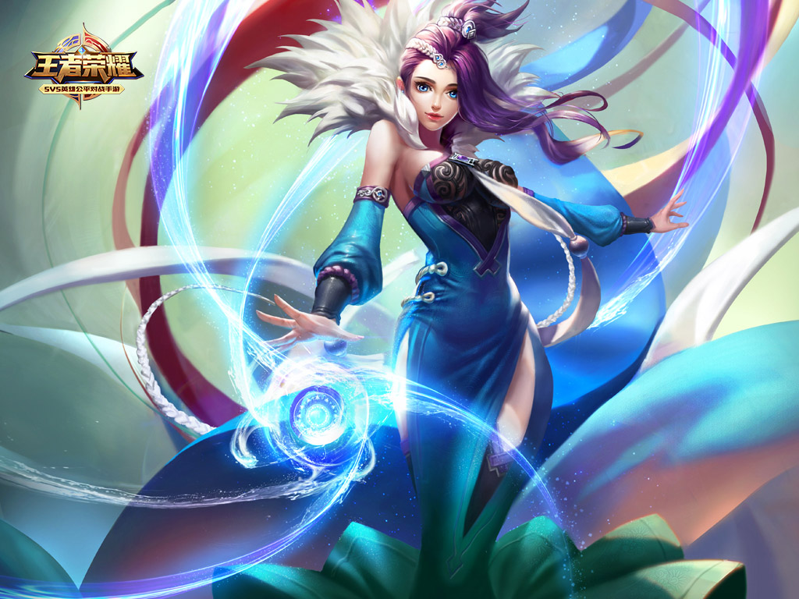
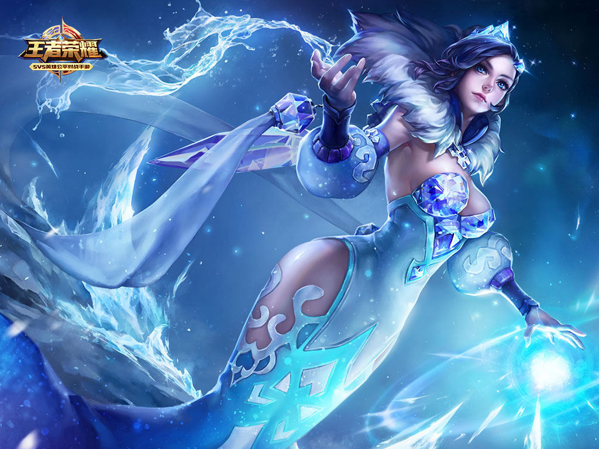
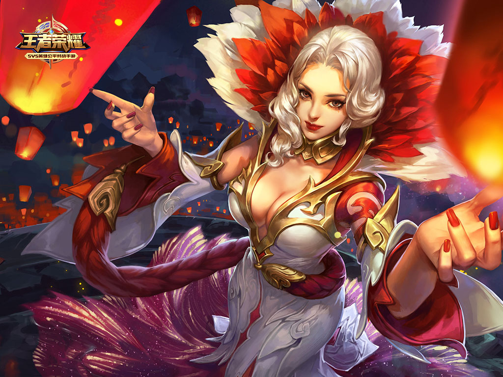

甄姬本是以温柔仁慈闻名大陆的绝代美女，出身极为高贵，被认为流着古代圣者的血脉，从而受到世人的崇敬。她从小被教育要肩负责任，克制自己的欲望，无私的感化世人，净化世间的污秽。
可十八年的坚守，所有小心谨慎，都在遇到那个人时被打破。他青春洋溢的面孔，大胆无畏的行动力，痴情持续的追求，还有那些令人心跳的甜言蜜语，都令她头晕目眩。
“我全部的生命意义都是为了邂逅你。”
“请接受卑微男子送上的赞美：若轻云之蔽月，若流风之回雪。”
“翩若惊鸿，婉若游龙。”
甄姬平静如水的心中产生涟漪，第一次有了要挣脱身份束缚的想法。她想为自己的生命争取一次。
经历重重波折，抛弃了家族，宿命和高贵的身份，她终究如愿以偿嫁入了正快速崛起的曹氏一族。然而，新婚之夜出现在眼前的人既熟悉又陌生，他曾经是才华横溢的恋人，如今是撕破面具的陌生人；一面是风流潇洒的翩翩公子，一面是潜藏着恨意与疯狂的继承者。
甄姬这才惊觉自己落入了一个圈套。曹氏一族迫切想得到她，所寻求的并不是美貌，而是她所拥有的自血脉中传承的力量。
一切为时太晚。她卷入野心，阴谋，鲜血和战乱中，无法自拔。除了随波逐流，似乎已没有选择。
“明明说好了，要永远在一起……”
返回顶部 返回首页